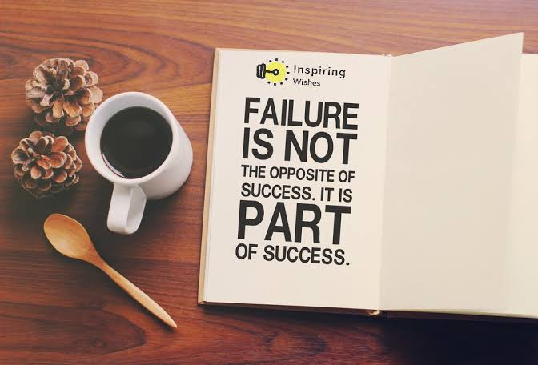

Failure Is Inevitable
“Failure isn’t fatal, but failure to change might be” — John WoodenWhy are people so scared of failure? Where in our personal history did we first subscribe to the notion that failing is bad? You might be inclined to cite the obvious — it prevents me from getting what I want. It makes me feel unworthy or hopeless. It moves me further away from what I really want. The underlying aspect behind failure is the meaning you assign to what it represents. Yet that’s what it took to invent the electric light bulb. Edison’s quote, which has become testament for the power of persistence signifies the truth of his reality, “I have not failed. I’ve just found 10,000 ways that won’t work.” Thomas Edison reframed failure to mean something greater. His declaration that it took 10,000 attempts to create something which previously did not exist highlights the growing need to develop persistence, rather than concede to failure. What if to create a vision of something greater required continual failure to get it right? Would you still proceed despite this? Tony Robbins suggests failure is an undesired outcome. I find this an ingenious approach, since at times we want to control things that are beyond the scope of our control. He furthermore reminds us that failure is a teaching tool and may often delay your progress leading to something greater, “I’ve come to believe that all my past failure and frustration were actually laying the foundation for the understandings that have created the new level of living I now enjoy.” If you hold a big dream or ambition for your future, failure is inevitable. I am yet to stumble across historical literature connecting those who succeeded with an invention, goal or dream in their first attempt. Leonardo da Vinci was one such exemption since he created many inventions in his mind. He used the power of imagination and creativity to bring to life numerous inventions in what he called thought experiments. He reasoned that once it is created at the level of the mind, bringing it to life becomes second nature. Whilst there have been few geniuses to rival Leonardo da Vinci , his biographer noted the countless hours he spent tirelessly fine tuning his inventions to bring them to life.
Reframe The Notion Of Failure
“Failure should be our teacher, not our undertaker. Failure is delay, not defeat. It is a temporary detour, not a dead end. Failure is something we can avoid only by saying nothing, doing nothing, and being nothing.” — Denis Waitley
Our human nature lends itself to failure. There are numerous unknown variables beyond our control which hinder progress. Although the greatest men in history have been able to master their thoughts, few of us have the ability to harness the power of our mind like a laser beam. Our thoughts ultimately influence our success in life. When we co-create with universal forces, it takes the burden off needing to be exact, perfect and hard on ourselves. The concept of failure is diminished since there is no timing or deadline to get it right the first time. Consider reframing the notion of failure by not connecting it to lack of self-worth. Whatever endeavour you face, view it from a higher perspective. By that I mean; if you were the universe looking down on yourself, what advice or counsel would you give? Personally, when I adopt this way of thinking, I reassure myself with the silent mantra — You’re right on track, go easy on yourself. When we remove guilt or pressure from ourselves, we give permission for our unique talents, skills and geniuses to be revealed. This energy is a consciousness which knows all. So it makes sense to align yourself with this energy using your unconscious mind to help you steer a path toward the answer. How can you achieve this state of expansive awareness in the context of overcoming what is holding you back? I suggest relating it to the areas of your life that matters most by refining any aspect which does not serve you. Some years ago I scaled back on working with individual clients to focus more on speaking and writing. At first I was a little anxious I had made the wrong decision, since I took a pay cut to pursue my passion. Similarly there were no guarantees it was going to pay off and I was in no position to supplement the lost income, at least until the new business venture turned profitable. Upon first impressions, I become aware of the spare time that was now available to me in the afternoon. Fatigue set in during the afternoon owing to a change in routine from standing to sitting, which I was not accustomed to. I used this down time as it were, to take advantage of a twenty minute nap due to weariness. This change in routine initially took me by surprise since I thought I was dropping off my work commitments, yet I was genuinely tired from sitting at a computer all day instead of actively interacting with clients, which is what I was accustomed to. Over time I noted that during these twenty minute intervals, some of my greatest ideas for articles, projects and business ideas emerged. I went so far as to leave a notepad beside my bed in order to jot down thoughts and ideas which emerged during that brief interlude. Upon further research, the brief naps offered me an opportunity to harness deep subconscious realisations that were not apparent when I was awake.
 To go places and do things that have never been done before – that’s what living is all about.Three Steps To Overcome Failure
“It’s not how far you fall, but how high you bounce that counts.” — Zig Ziglar
Have you noticed that when you are in a stressed state, being creative is impossible? This is due to the shutting down of the left brain, which is the seat of logic. The right brain is intuitive, holistic and creative. Using this practice allowed me to push through failure by viewing it from a different perspective. Invariably, in time gone by I would have ruminated at my desk seeking answers with little success. By transitioning into a conducive, subconscious state my mind found the best way to harness its creative ability. I’d like you to consider the following points as a means to overcome failure.
1. Harness Your Potential
Find a unique way to harness your potential that contradicts what society imposes upon us. It might involve taking a nap at the middle point of the way, a walk, down time while relaxing in nature, meditation or time alone in deep contemplation. Experiment with the process until you establish a routine which serves you well. A word of advice — being in a relaxed state harnesses the power of your parasympathetic system, otherwise known as the rest or digest branch of the ANS (Autonomic Nervous System). Going into deeper relaxed states not only is conducive to fostering Alpha brain wave states, but it has also been shown to reduce the stress hormone cortisol over time.
2. Reframe Failure
Reframe the concept of failure to a more empowering state, rather than the loss of something. When we view failure as a process which brings us closer to our intended outcomes, it releases the pressure from having to get things right or the need for perfection. Oftentimes, the end result may hinge on a number of repeated failures, which draw you closer to you desired outcome. Therefore, do not have a fixed mindset toward how life should unfold or what constitutes success. Hold off defining outcomes arising to your current circumstances. Life’s events have an uncanny way of taking shape when you least expect it.
3. Avoid Fixed Outcomes
Remove the pressure from holding a fixed outcome. An outcome already exists out there within the realm of universal intelligence. The universe holds multiple ways of achieving an outcome if your intentions and convictions are firm. Release your expectations of life events to unfold naturally. Expectations limit the flow of the experience. We add layers to our experience of life to rationalise the world, albeit at a cost by limiting our perspective. In his interview with Oprah Winfrey, Brazilian author Paulo Coelho who wrote The Alchemist, attributes his success to being open and receptive to uncertainty. He reminds us to flow through life — allowing it to carry you where it needs to be devoid of expectations, anxiety or frustration. As we gain trust in the rhythm of life, we acquire confidence through our attentiveness to the signs life bestows us. So how can we liberate ourselves from expectations while fulfilling our human needs? Firstly, experience the world through the eyes of a child. Surrender all expectations as you remain fascinated by uncertainty and ambiguity, which are the birthplace of creation. Secondly, stay grounded and present — this allows you to let go of future expectations and the need to recycle the past in to the present moment. Remaining present invites you to embody life’s experiences with fullness. You draw closer to your desired outcome every time you fail. Learn to embrace failure as a necessary step forward, not a stop sign. Trust that every time you fail, the process reveals itself a little more. Your greatest victory will come when you cooperate with the power of your mind, for your greatest ally has a supreme intelligence capable of the right answers. When you accept there are no such thing as failure, progress and success will be ready to greet you. Knowing this, failure is not an option — it’s a prerequisite.
Text by Mission Originals